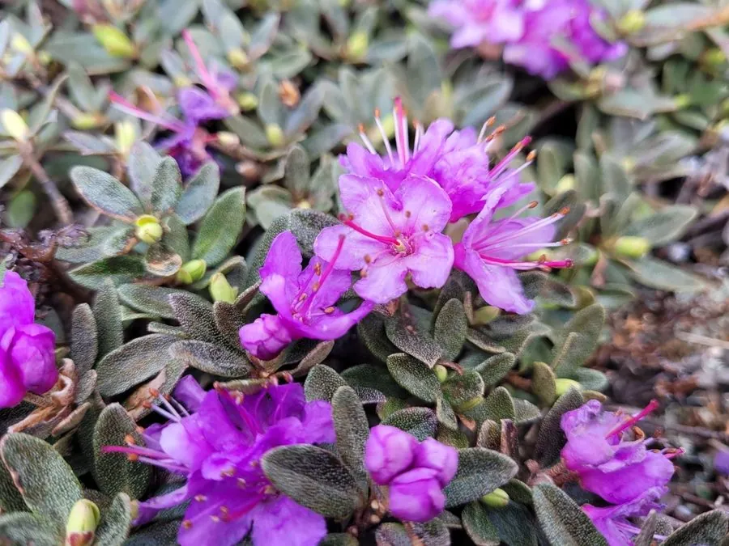

灌木与花木 · 植物界
高山杜鹃 Rhododendron lapponicum

杜鹃花科杜鹃属常绿矮小灌木，高仅数十厘米，花紫红色，是环北极苔原和高山冻原上的代表性开花植物。
- 分类
- 门被子植物门纲木兰纲目杜鹃花目科杜鹃花科属杜鹃属
- 栖息环境
- 海拔 2000 米以上的高山冻原、岩缝与苔原，耐严寒强风
- 地理分布
- 中国东北、内蒙古、新疆高山地带；北欧、北美、俄罗斯西伯利亚
- 保护级别
- 暂无评估；中国未列入国家重点保护野生植物名录
物种志
高山杜鹃为杜鹃花科杜鹃属常绿矮小灌木，高十至五十厘米，分枝匍匐或斜升，幼枝密被鳞片和短毛。叶片互生，小型，椭圆形至倒卵形，革质，表面深绿，背面密被褐色鳞片。花两至五朵簇生于枝顶，花冠漏斗状，紫红色至淡紫色，花期六至七月；蒴果小，卵圆形，成熟时褐色开裂，果期八至九月。
高山杜鹃呈环北极分布，见于中国东北、内蒙古、新疆的高山地带以及北欧、北美和俄罗斯西伯利亚的苔原地区，多生于海拔两千米以上的高山冻原和岩缝中。它耐严寒、抗强风，植株低矮匍匐以抵御风雪，适宜酸性贫瘠土壤。花期虽短，但成片开放时把苔原染成紫红色，是北极和高山生态系统中的重要蜜源植物，也是研究植物对极端环境适应的材料。
形态与习性
- 株高10–50 cm，匍匐或斜升
- 花期6–7 月，花紫红色
- 果期8–9 月，蒴果小、开裂
- 光照喜光，高山全日照
- 水分喜湿润，耐雪被覆盖
- 土壤酸性贫瘠的冻原土
- 主要用途高山观赏，科研材料
趣味知识
- 高山杜鹃是环北极分布植物，在北极圈内的苔原上也能开花。
- 它的植株低矮匍匐，可躲在高山岩石背风处抵御强风和严寒。
- 叶片背面的褐色鳞片能减少水分蒸发，是适应干冷环境的特征。